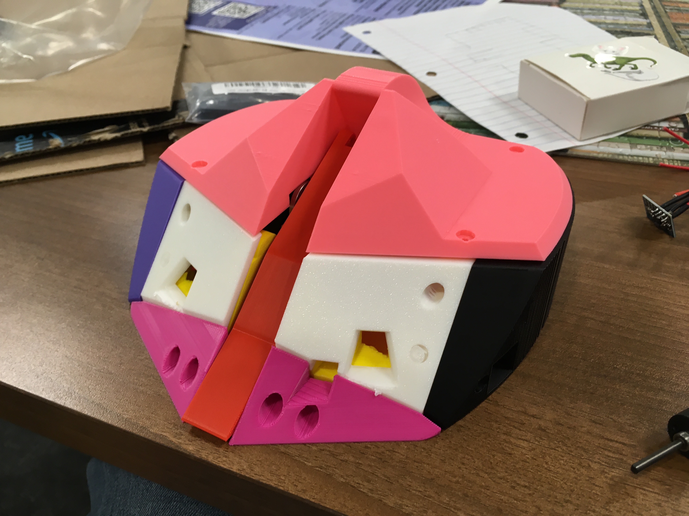
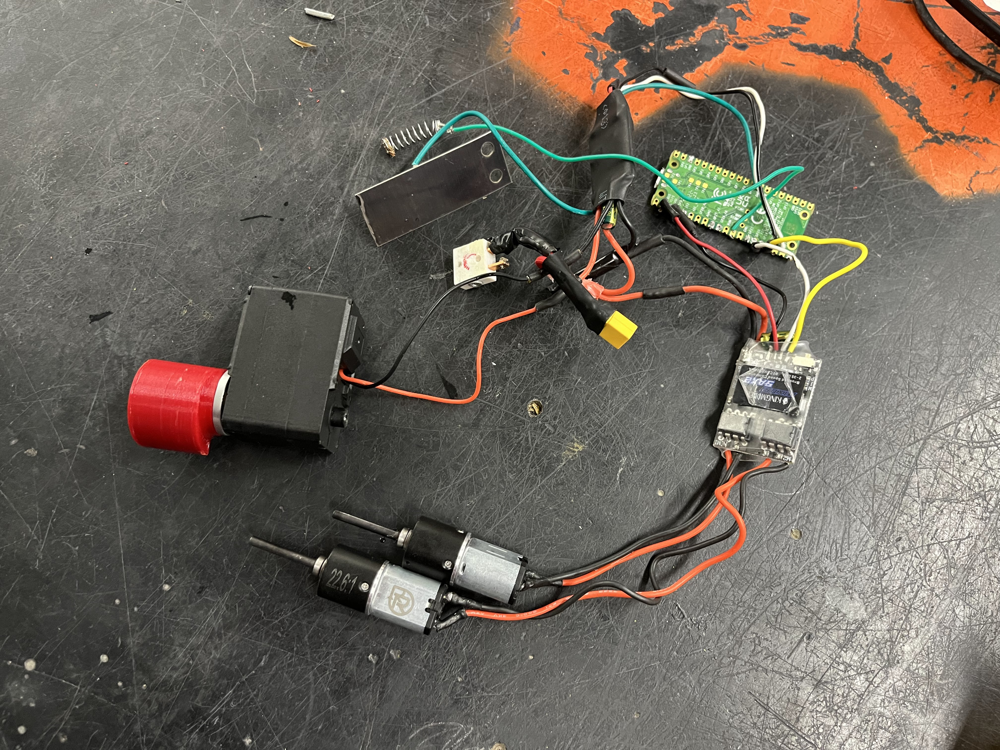
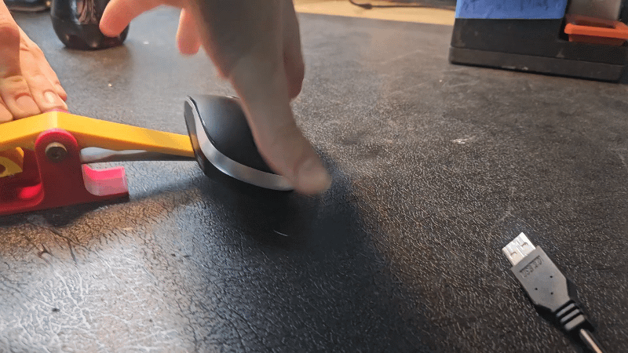
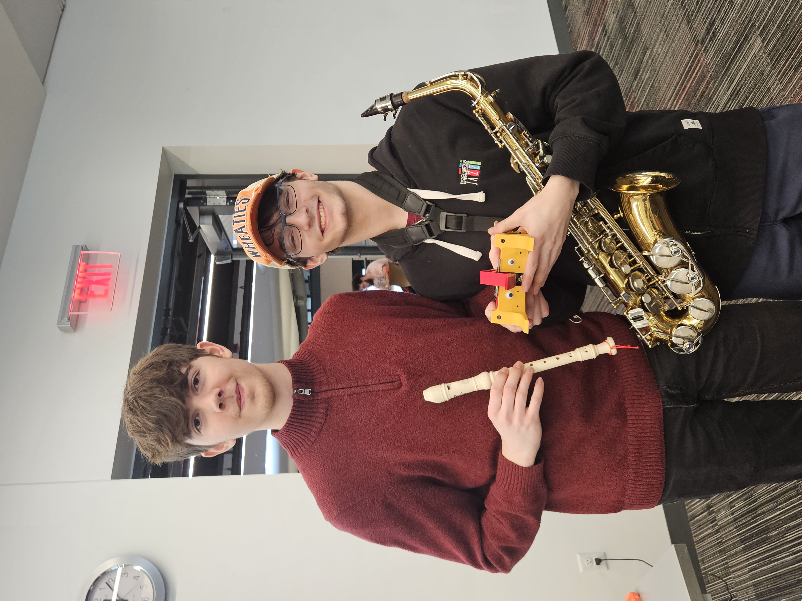
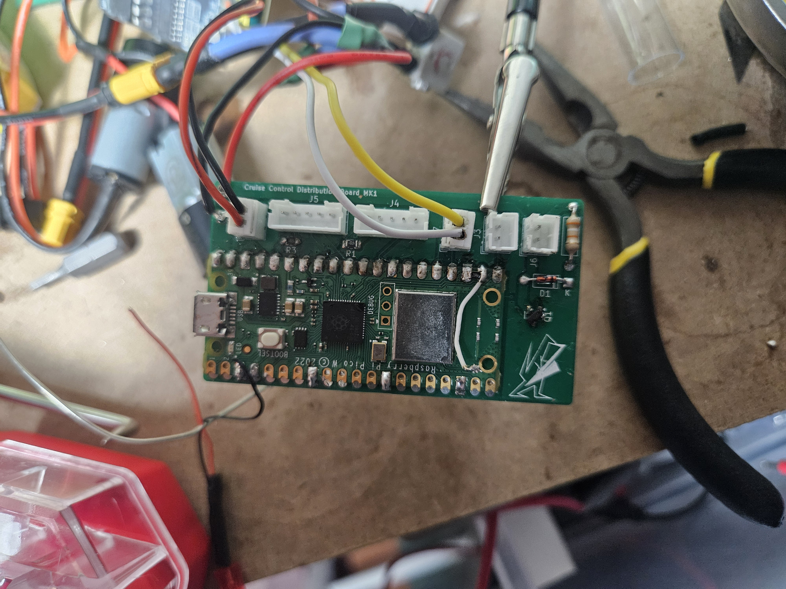
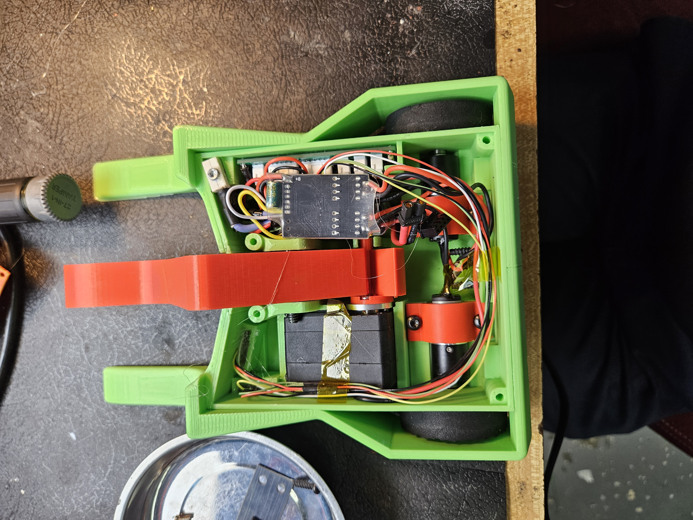
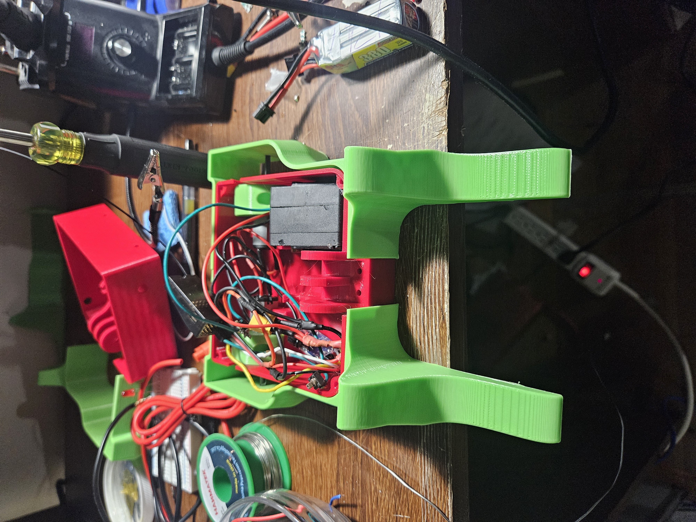
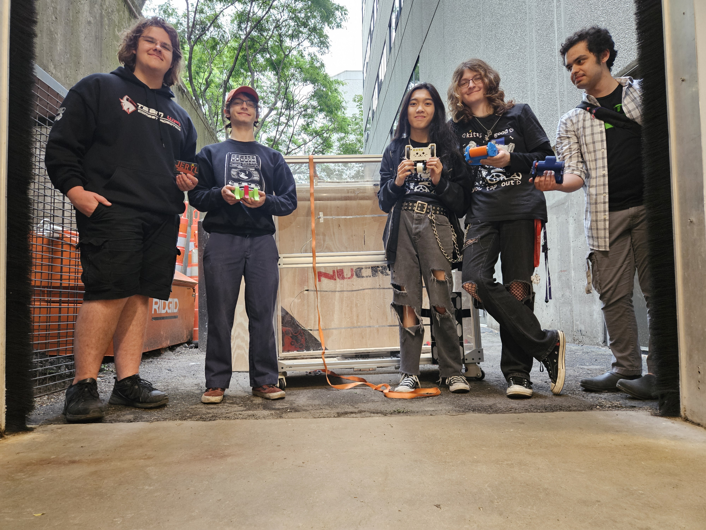

1lb Combat Robot
Skills: Fusion 360 CAD, PCB Design, Electronics, 3D Printing, Waterjet Cutting
Freshman year, my friend Andy and I built a 1lb combat robot named Cruise Control for the WPI Combat Robotics quarterly 1lb plastic ant combat robot event. The goal for this robot was to have it autonomously drive around and strike faster than any human driver could. Part of its high maneuverability is that it uses a spring loaded flipper as its weapon instead of a traditional spinner which introduces intense gyroscopic forces that make it difficult to drive and control. The first iteration of this robot, as seen below, tried to maximize repairability with every panel being easily replaceable. However, cool having a bunch of individual panels was, it was far overweight and non-functional.

Over B-term, I experimented with getting the flipping mechanism as good as possible, as seen in one of the testing videos below and getting the whole thing within weight. I ended up experimenting with many cams, arms, and springs to get this to work properly. In short the mechanism uses a snail cam and to wind up an arm that is resisted by flat sheet metal springs that I waterjet cut. This was also pretty difficult in terms of packaging. The flipper mechanism, however cool, took up additional weight and space inside the combat robot, that would not be an issue in a traditional spinner. The time of flight sensors in the robot was an additional aspect that made its physical constraints difficult. Additionally, this is fairly unconventional at WPI and in general so there were not many resources online or in person I could access on what other people did. Additionally, we burnt out the control circuitry of the servo we were using, so we removed it from the servo and used a MOSFET to control the DC motor of the servo directly.



When competition time came in C-term, we were still overweight and the autonomous vision didn’t work due to the inaccuracy of our time of flight sensors. So, we utilized the unconventional control bonus, which gives you 0.5lb weight bonus if you use something other than a controller. So we used a saxophone to control the robot as seen below, there is also a timestamped video of the round.

The next term I created a PCB using KiCad that reduced the size of our wiring harness, and integrated the MOSFET DC motor driver, as seen below. I also improved upon the flipping mechanism, weight, armor, and general design of the robot. However, we were not able to compete in the D-term competition due to our Pico W dying the night before and not having enough time to fix it in the morning.

Over the following summer, I revamped Cruise Control and renamed it Froggo to compete in the Northeastern Combat Robotics plastic ant event. To revamp it I removed the time of flight sensors and Pico W controller to just use a standard ER6 ELRS radio controller and receiver. I also added a limit switch and small control board using TTR logic that stops the flipper arm from winding once it is fully cocked.

The Northeastern event was a ton of fun, and I ended up getting 4th at the competition! However, I was not able to use heavy springs and was forced to use lighter ones because the TTR logic board was not able to drive the MOSFET optimally. Thus the flipper was not nearly as powerful as it could be. In the next iteration of the robot, I am going to implement a PCB using a D flip-flop chip to adequately drive the MOSFET.
